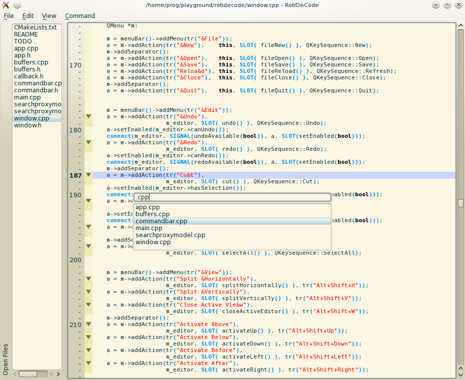

About
RotiDeCode is a trimmed-down text editor built using Qt4 and
QCodeEdit 3
Sources and data files are available under the FreeBSD license (2-clause BSD aka "Simplified BSD").
However some dependencies use less permissive licenses whose terms therefore apply to the combined work.
Features
- Arbitrary split views
- Uncluttered interface
- Automatic session saving (restore open files, split views, cursor position, scrollbar position, ...)
- Quick navigation bar
- All the benefits of QCodeEdit (syntax highlighting, line numbers, code folding, parenthesis matching...)
